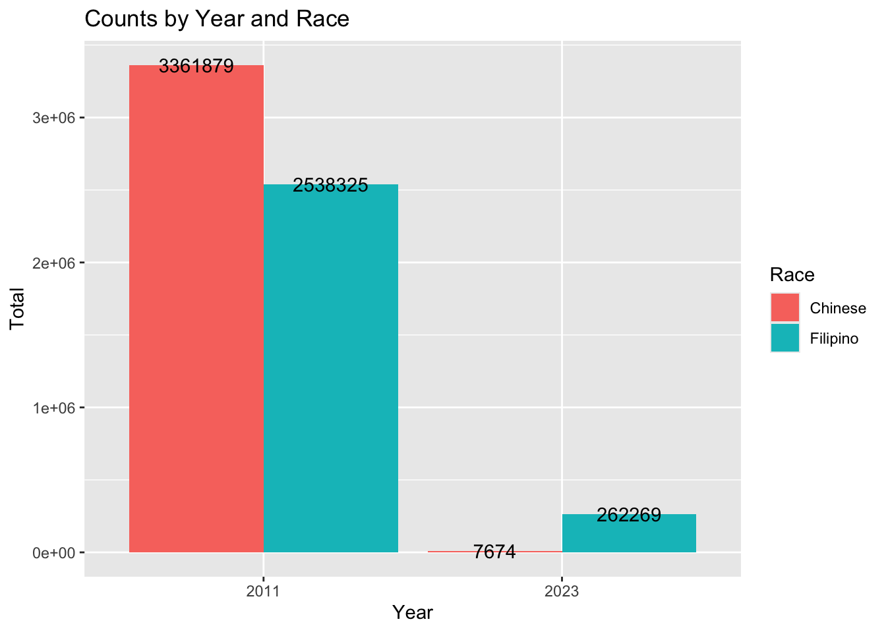
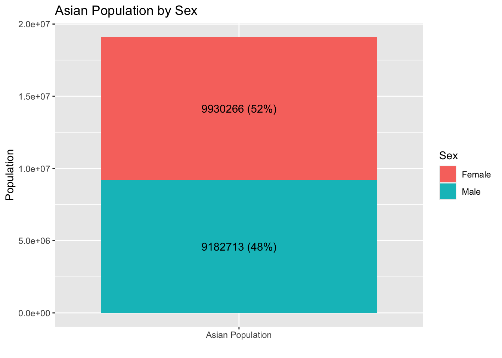

Your original .Renviron will be backed up and stored in your R HOME directory if needed.
Your API key has been stored in your .Renviron and can be accessed by Sys.getenv("CENSUS_API_KEY").
To use now, restart R or run `readRenviron("~/.Renviron")`
[1] "dcff66db10ae72ca67f1225694d5f11468367056"
Part 1 1. Choose a question to investigate. Describe what is the question you aim to answer with the data and what you want to visualize.
I want find out number of Filipinos and Chinese in the US. I also want the distribution of male vs female in the Asian population
Extract data from the tidycensus API. Use at least three different calls to the tidycensus API to extract out different datasets. For example, these could be across years, locations, or variables.
I RECEIVED CODE AND DEBUGGING HELP FROM CHAT GPT .
# Total counts from detailed race tables 2023count_2023 <-get_acs(geography ="us",table ="B02015",year =2023,survey ="acs1")
Getting data from the 2023 1-year ACS
The 1-year ACS provides data for geographies with populations of 65,000 and greater.
Loading ACS1 variables for 2023 from table B02015. To cache this dataset for faster access to ACS tables in the future, run this function with `cache_table = TRUE`. You only need to do this once per ACS dataset.
The 1-year ACS provides data for geographies with populations of 65,000 and greater.
Loading ACS1 variables for 2011 from table B02015. To cache this dataset for faster access to ACS tables in the future, run this function with `cache_table = TRUE`. You only need to do this once per ACS dataset.
#Age, Sex 2022 (5 years)age_sex_2022 <-get_acs(geography ="us",table ="B01001D", year =2022, survey ="acs5", cache_table =TRUE)
Getting data from the 2018-2022 5-year ACS
Loading ACS5 variables for 2022 from table B01001D and caching the dataset for faster future access.
Clean the data. Include some form of data wrangling and data visualization using packages such as dplyr or tidyr. Other packages that might be helpful to you include lubridate, stringr, and forcats. You must use at least two functions from purrr.
We first look at the counts of Chinese and Filipinos in the US.
#Combines count_2011 and count_2023all_counts <-bind_rows(mutate(count_2023, year =2023),mutate(count_2011, year =2011))#Filters to only include Filipinos and Chineseasian_counts <- all_counts %>%filter(str_detect(variable, "B02015_008|B02015_007|B02015_008E|B02015_007E")) %>%mutate(race =case_when(str_detect(variable, "B02015_008|B02015_008E") ~"Filipino",str_detect(variable, "B02015_007|B02015_007E") ~"Chinese",TRUE~"Other" ) ) %>%select(NAME, year, race, estimate, moe)#Summarizes count by race#This part of the code was done by chatGPTsummary_counts <- asian_counts %>%split(.$race) %>%map_dfr(~summarise(.x,total =sum(estimate),.by = year),.id ="race")print(summary_counts)
# A tibble: 4 × 3
race year total
<chr> <dbl> <dbl>
1 Chinese 2023 7674
2 Chinese 2011 3361879
3 Filipino 2023 262269
4 Filipino 2011 2538325
The graph shows the number of Filipinos and Chinese in 2011 and 2023 respectively. The 2023 data pull is obviously inaccurate, I am unsure why, even after observing the data table. Attempting to use 2024 data resulted in same findings.
print(count_2023)
# A tibble: 34 × 5
GEOID NAME variable estimate moe
<chr> <chr> <chr> <dbl> <dbl>
1 1 United States B02015_001 20052323 46718
2 1 United States B02015_002 4228441 52414
3 1 United States B02015_003 337925 15696
4 1 United States B02015_004 725773 18935
5 1 United States B02015_005 1466761 36764
6 1 United States B02015_006 39237 7560
7 1 United States B02015_007 7674 1822
8 1 United States B02015_008 262269 13020
9 1 United States B02015_009 1170 1408
10 1 United States B02015_010 220379 14764
# ℹ 24 more rows
Code with help from chatGPT. I tried to understand the code and chose this one after vetoing the others.
# A tibble: 2 × 2
Sex_Group Estimate
<chr> <dbl>
1 Male 9182713
2 Female 9930266
#Purrr function by chatGPTtotal_pop <-sum(sex_totals_final$Estimate)sex_totals_with_percent <- sex_totals_final %>%mutate(Percent =map_dbl(.x = Estimate, .f =~ (.x / total_pop) *100 ) )print(sex_totals_with_percent)
# A tibble: 2 × 3
Sex_Group Estimate Percent
<chr> <dbl> <dbl>
1 Male 9182713 48.0
2 Female 9930266 52.0
Visualize the data. Create data visualizations of your choice. However, your analysis should include at least three plots with you using at least two different geom_() functions from ggplot2 (or another package with geom_() functions).
with code help from chat GPT To add labels and prettify the charts
ggplot(summary_counts, aes(x =factor(year), y = total, fill = race)) +geom_col(position ="dodge") +geom_text(aes(label = total, y = total +0), # just above barposition =position_dodge(width =0.9)) +labs(x ="Year", y ="Total", fill ="Race", title ="Counts by Year and Race")

sex_totals_final <- sex_totals_final %>%mutate(perc = Estimate /sum(Estimate) *100,label =paste0(Sex_Group, "\n", Estimate, " (", round(perc, 1), "%)"))ggplot(sex_totals_final, aes(x ="", y = Estimate, fill = Sex_Group)) +geom_col() +coord_polar(theta ="y") +geom_text(aes(label = label, y =cumsum(Estimate) - Estimate/2)) +# centered on slicelabs(fill ="Sex", title ="Sex Distribution") +theme_void()
sex_totals_final <- sex_totals_final %>%mutate(label =paste0(Estimate, " (", round(Estimate /sum(Estimate) *100, 1), "%)"))ggplot(sex_totals_final, aes(x ="Asian Population", y = Estimate, fill = Sex_Group)) +geom_col() +geom_text(aes(label = label, y =cumsum(Estimate) - Estimate/2)) +# center inside each segmentlabs(x ="", y ="Population", fill ="Sex", title ="Asian Population by Sex")

Report your findings. Write up your data analysis as a brief report. The report should be readable by a scientist uninvolved in the study. Think about how you can write a data analysis that is both concise, but also informative. Include a paragraph summarizing your methods and key findings. Include any limitations or potential biases in pulling data from the API or the analysis. Be sure to comment and organize your code so is easy to understand what you are doing and consider including portions of the code in an Appendix, if helpful.
There were more Chinese than Filipinos in 2011. The data for 2023 was inaccurate, I likely pulled the wrong data from ACS. (Or used the wrong code). There are more women (48%) than men (52%)in the Asian population (100%).
Part 2
In this part, you will use the rvest package to scrape data from a website, wrangle and analyze the data, and summarize your findings.
Choose a website to scrape. Chosen Website: https://books.toscrape.com/
Extract data with rvest. Here, you will want to identify the specific HTML elements or CSS selectors containing the data. Then, use rvest functions like read_html(), html_elements(), and html_text() or html_table() to retrieve the data.
Clean the data. Next, perform some basic wrangling, such as remove extra whitespace, handle missing values, and convert data types as needed. You might find the functions from dplyr or tidyr useful for any additional transformations, such as renaming columns, filtering rows, or creating new variables.
Analyze the data. Perform a simple analysis of your choice. For example, you could -Count how many times specific words or themes appear. -Create a summary statistic (e.g., average rating, job salary, team win percentage). -Create a data visualization (e.g., bar chart, histogram) of an interesting metric.
Report your findings. Write up your data analysis as a brief report. The report should be designed for a technical audience, such as a technical manager who appreciates the technical details. Think about how you can write a data analysis that is both concise, but also informative. Include a paragraph summarizing your methods and key findings. Include any limitations or potential biases in scraping data or the analysis. Be sure to comment and organize your code so is easy to understand what you are doing.
The average price of books in the website was 38.05 pounds, with the range falling between 13.99 and 57.25 pounds.
This is an exercise to practice using rvest and gadget selector, and the website used is also a dummy website for practicing scraping.